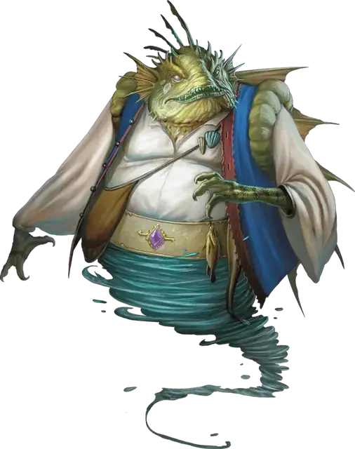

Марид
Marid
Большой Элементаль, хаотично-нейтральный

Класс Доспеха 17 (природный доспех)
Хиты 229 (17к10 + 136)
Скорость 30 футов, плавая 90 футов, летая 60 футов
| мод | спас | ||
|---|---|---|---|
| СИЛ | 22 | +6 | +6 |
| ЛОВ | 12 | +1 | +5 |
| ТЕЛ | 26 | +8 | +8 |
| мод | спас | ||
|---|---|---|---|
| ИНТ | 18 | +4 | +4 |
| МДР | 17 | +3 | +7 |
| ХАР | 18 | +4 | +8 |
Сопротивление урону кислота, холод, электричество
Чувства слепое зрение 30 футов, тёмное зрение 120 футов, пассивное Восприятие 13
Языки Акван
Опасность 11 (7200 опыта)
Бонус мастерства +4
Среда обитания Побережье, Под водой
Особенности
Амфибия. Марид может дышать и воздухом и под водой.
Элементальная гибель. Если марид умирает, его тело распадается во взрыве воды и пены, оставляя только снаряжение, которое марид носил и нёс.
Врождённое колдовство. Базовой характеристикой марида является Харизма (Сл спасброска от заклинания 16, +8 к попаданию атаками заклинаниями). Он может накладывать следующие заклинания, не нуждаясь в материальных компонентах:
• Неограниченно: обнаружение зла и добра [detect evil and good], обнаружение магии [detect magic], очищение пищи и питья [purify food and drink], сотворение или уничтожение воды [create or destroy water], туманное облако [fog cloud];
• 3/день каждое: подводное дыхание [water breathing], хождение по воде [water walk], языки [tongues];
• 1/день каждое: власть над водами [control water], газообразная форма [gaseous form], невидимость [invisibility], призыв элементаля [conjure elemental] (только водяной элементаль), уход в иной мир [plane shift].
Вариант: Способности гениев. Гении обладают различными магическими способностями, включая заклинания. Некоторые владеют столь великой силой, что могут менять обличья или изменять природу реальности.
Маскировка. Некоторые гении могут скрыть свою истинную природу, наложив на себя иллюзию сходного по сложению другого существа. Такие гении могут неограниченно накладывать заклинание маскировка [disguise self], зачастую с увеличенной длительностью. Более могущественные гении могут накладывать заклинание истинное превращение [true polymorph] от одного до трёх раз в день, возможно, с увеличенной длительностью. Такие гении могут менять только собственный облик, и крайне редко могут накладывать подобные заклинания на других существ или предметы.
Желания. Среди смертных ходят легенды о гениях, исполняющих желания. Но лишь могущественнейшие из гениев, например, их знатные представители, могут это сделать. Те из них, кто обладают такой силой, могут даровать исполнение от одного до трёх желаний любому существу, кроме другого гения. Если гений уже исполнил свой предел желаний, он не сможет сделать это вновь в течение некоторого времени (обычно 1 год), и, согласно законам вселенной, один и тот же гений может потратить свой лимит желаний на другое существо только один раз в жизни этого существа.
Чтобы гений исполнил желание, существо должно сформулировать его, находясь в 60 футах от гения. После этого гений накладывает заклинание исполнение желаний [wish], воспроизводящее эффект. Изворотливые по своей природе гении могут попытаться извратить желание, воспользовавшись несовершенством его формулировки. Как правило, искажение формулировок гении оборачивают себе на пользу.
Действия
Мультиатака. Марид совершает две атаки трезубцем.
Трезубец. Рукопашная или дальнобойная атака оружием: +10 к попаданию, досягаемость 5 футов или дистанция 20/60 футов, одна цель. Попадание: Колющий урон 13 (2к6 + 6), или колющий урон 15 (2к8 + 6), если используется двумя руками для совершения рукопашной атаки.
Струя воды. Марид магическим образом испускает струю воды 60-футовой линией шириной 5 футов. Все существа в этой линии должны совершить спасбросок Ловкости Сл 16. При провале цель получает дробящий урон 21 (6к6) и, если её размер не больше Огромного, толкается на расстояние до 20 футов от марида и сбивается с ног. При успехе цель получает половину дробящего урона, но не толкается и не сбивается с ног.
Описание
Живущие на Стихийном Плане Воды мариды — наиболее удивительные из гениев. Несмотря на то, что все гении обладают великой силой, даже слабейший из маридов считает себя сильнее ветреного джинна, приземлённого дао и дымящегося ифрита.
Огромные и рыбоподобные, мариды представляют собой странное зрелище в своих жилетах и ярко окрашенных шароварах. Их голоса бывают то мягкими, как дыхание морского бриза, то неистовыми и громоподобными, как штормовые волны, разбивающиеся о скалы. В полёте их тела обращаются в столбы пенистой воды.
Повелители воды. Вода — родная стихия маридов, и эти гении властны творить с ней всё, что пожелают. Марид может ходить по воде и дышать, находясь под водой. Он может создать воду или сформировать облако пара или туман из влаги, присутствующей в воздухе. Он может даже сам превратиться в туман или обратить мощь воды против своих врагов.
Дома маридов. Мариды редки на Материальном Плане. Они обитают в могучих магических коралловых крепостях в Стихийном Плане Воды. Их цитадели дрейфуют в глубинах вод, но в них есть отдельные залы с воздухом, где могут разместиться рабы или гости.
Мариды не требуют многого от своих рабов, но желают обладать ими просто ради положения в обществе. Мариды покидают свои пределы, дабы захватить людей, искусных в ремёслах или искусствах, шутов или рассказчиков, и обращают их в рабов при своём дворе.
Иерархия тщеславия. Все мариды претендуют на благородные титулы, и меж собой в высоте звания соревнуются шахи, султаны, муфтии и хедивы. Обычно титулы маридов не значат ничего, кроме степени высокомерия носящих их.
Мариды свысока смотрят на всех прочих — даже на других гениев — как на низших в различной степени существ, от «бедных родственников» до тех, от кого можно ждать лишь беды. Они терпят джиннов, не любят дао, и ненавидят ифритов.
Гуманоиды — это последние из существ, которых мариды готовы терпеть, но иногда они согласны заключать сделки с могучими волшебниками и властителями почти как с равными. Иногда это бывает ошибкой, ведь волшебники заключают маридов в морские раковины, кувшины и фляги. Сладкие речи и богатые дары — вот каким языком следует обращаться к мариду ничтожным смертным, знающим своё место.
Своенравные рассказчики. Мариды — непревзойдённые рассказчики, чьи излюбленные легенды прославляют доблесть всего рода маридов и, разумеется, самого рассказчика. Прихотливые и чудаковатые, они лгут часто и искусно. Они не всегда намеренно лгут, зачастую они лишь желают приукрасить свой рассказ. Мариды сочтут преступлением попытку низшего существа прервать их рассказ, а оскорбление марида — это верный способ обратить его гнев против себя.
См. дополнительно статью: "Бестиарий: Гении"